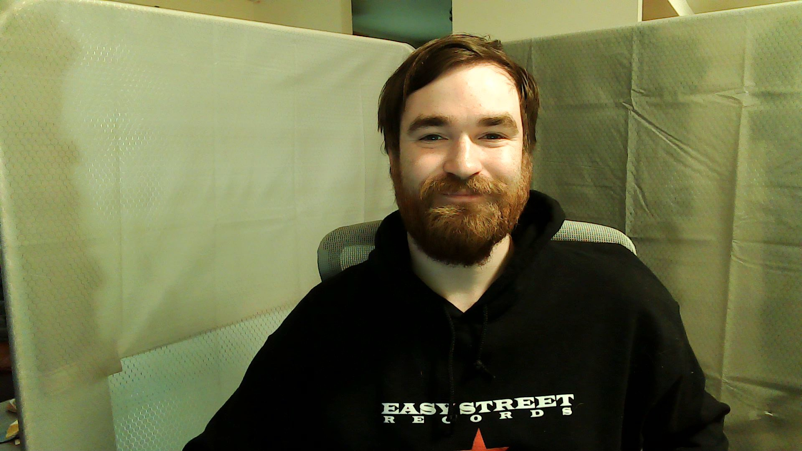

<!DOCTYPE html>
<html lang="en-US"> </html>
<head>
  <link href="css/styles.css" rel="stylesheet" type="text/css">
  <title>Brandon Spear</title>
</head>
<body>
  
  <h1>Brandon Spear's Portfolio</h1>
  <h1>
    <p>Projects!</p>
  </h1>

  <div class="Projects">
    <h2>Hello World</h2>

    <a href="https://github.com/TheEPICturkey/Hello_World.git">Hello World</a>

    <p><span class="FancyLetters">This was the project I made within the first couple hours of my bootcamp. This website says "Hello World" in a couple different languages. This project uses VSCode and Bash.</span></p>
  </div>

  <div class="Projects">
    <h2>Goodbye World</h2>

    <a href="https://github.com/TheEPICturkey/Goodbye-world.git">Goodbye World</a>

    <p><span class="FancyLetters">This was the project i made the second day of my bootcamp. This website says "Goodbye World" in a couple different languages. This project uses VSCode and Bash.</span></p>
  </div>

  <div class="Projects">
    <h2>My First Website</h2>

    <a href="https://github.com/TheEPICturkey/my-first-webpage-1.git">My First Website</a>

    <p><span class="FancyLetters">In this project, i learned how to make a non operational website using VSCode. This project uses VSCode, Bash, and CSS.</span></p>
  </div>

  <div class="Projects">
    <h2>Animal Shelter</h2>

    <a href="https://github.com/TheEPICturkey/Animal-Shelter.git">Animal Shelter</a>

    <p><span class="FancyLetters">In this project, we created an animal shelter website. We used photos of our pets as the "adoptees". This project uses VSCode, Bash, and CSS.</span></p>
  </div>

  <div class="Projects">
    <h2>Boring Lecture</h2>

    <a href="https://github.com/TheEPICturkey/boring_lecture.git">Boring Lecture</a>

    <p><span class="FancyLetters">In this project, I created an boring lesson website. I chose to do my lecture on how to have a birthday. This project uses VSCode, Bash, and CSS.</span></p>
  </div>
  
  <div class="Projects">
    <h2>Brandon Spear's Portfolio</h2>

    <a href="https://github.com/TheEPICturkey/Portfolio-Webpage.git">Brandon Spear's Portfolio</a>

    <p><span class="FancyLetters">As you can see, I have created this portfolio as my first independent project. This project uses VSCode, Bash, and CSS.touch </span></p>
  </div>

  <div class="AboutMe">
    <h3> About <em><strong>ME</strong></em> </h3>
    <p>I was born in Washington state. Growing up, my uncle Randy Lewis (famous for his "This or That" brand) taught himself coding, and editing. His work was always amazing to me and I wanted to learn how to do what he did. After branching out and meeting with may coders and software developers, i set my mind on coming to Epicodus to make the best life for myself. In this list are a few of my favorite things.</p>  
      <ul>
      <li>Cheese</li> 
      <li>Gaming</li> 
      <li> Hiking</li>
      </ul>
  </div>

  <div class="img">
    <h4>

      

    </h4>
  </div>

  <div class="FavoriteProjects">
    <h1> Here are some of my favorite projects.</h1>
    <ol>
      <li>Animal Shelter</li>
      <li>Boring Lecture</li>
      <li>Portfolio Webpage</li>
    </ol>
  </div>
</body>

  
 


  
